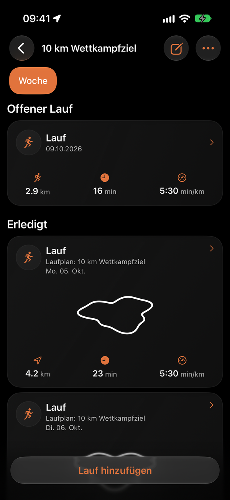
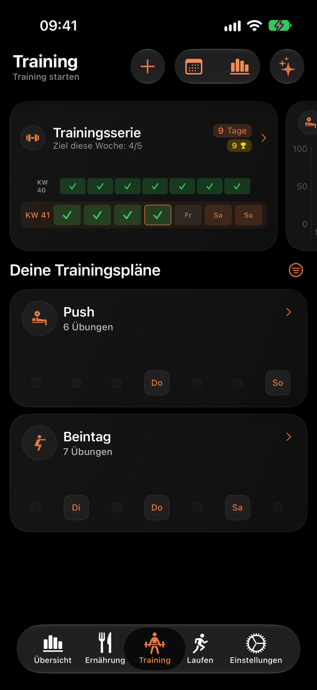

Training, Laufen & Ernährung · iPhone & Apple Watch
Dein Training.
Dein Training.
Deine Läufe.
Deine Ernährung.
Erstelle Trainings- und Laufpläne, protokolliere deine Einheiten und führe dein Ernährungstagebuch. Behalte Aktivität, Makros und Fortschritt gemeinsam im Blick.
Kostenlos herunterladen
Offline verfügbar
iPhone & Apple Watch

